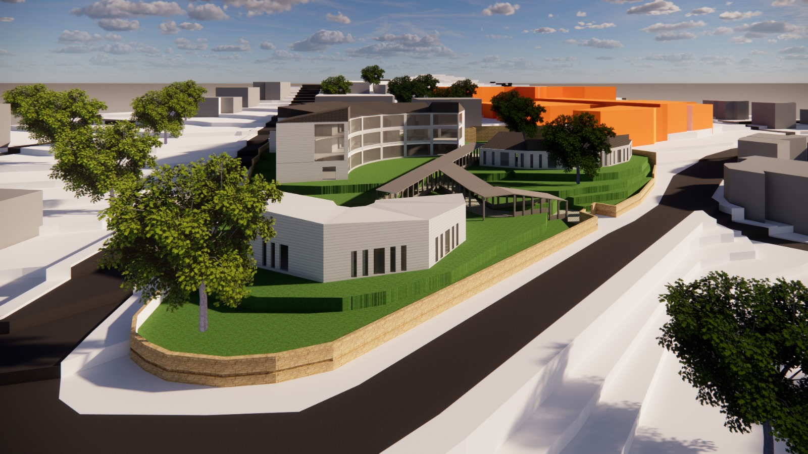
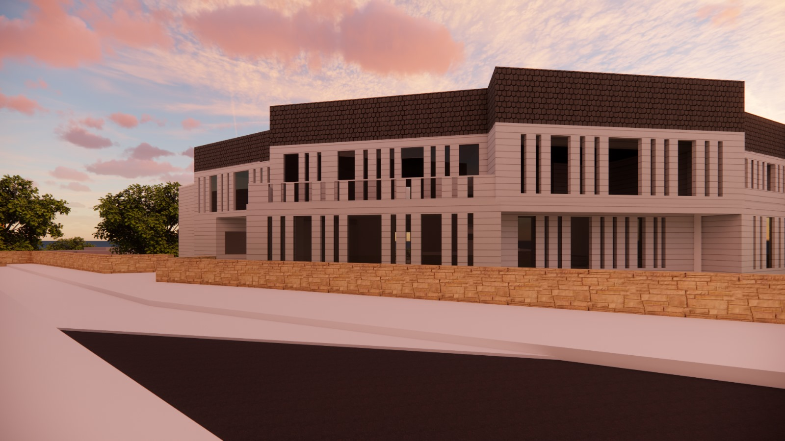
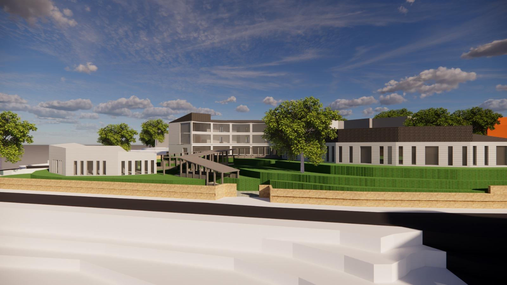
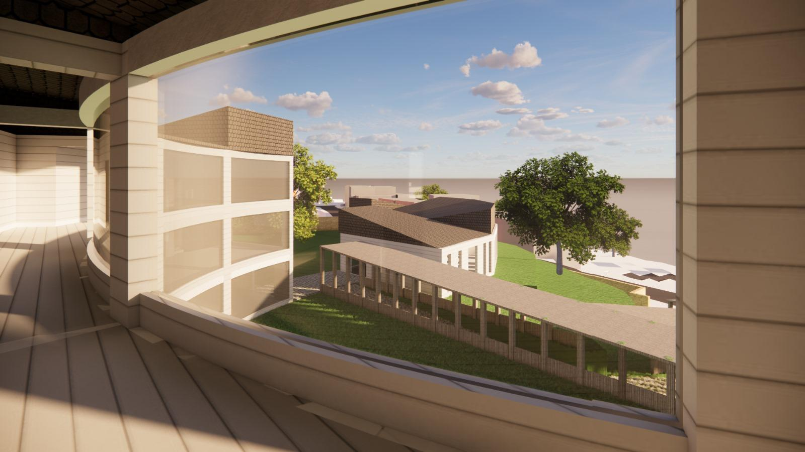
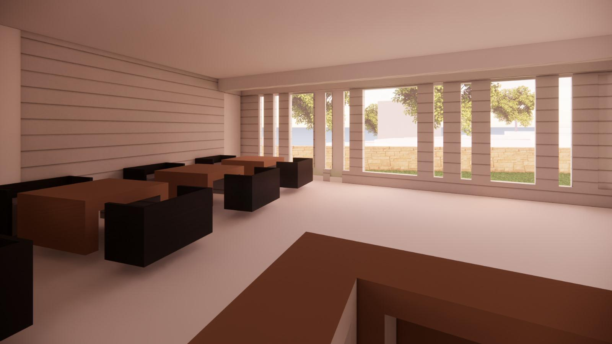
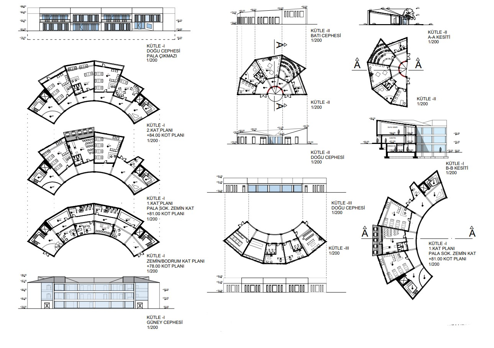
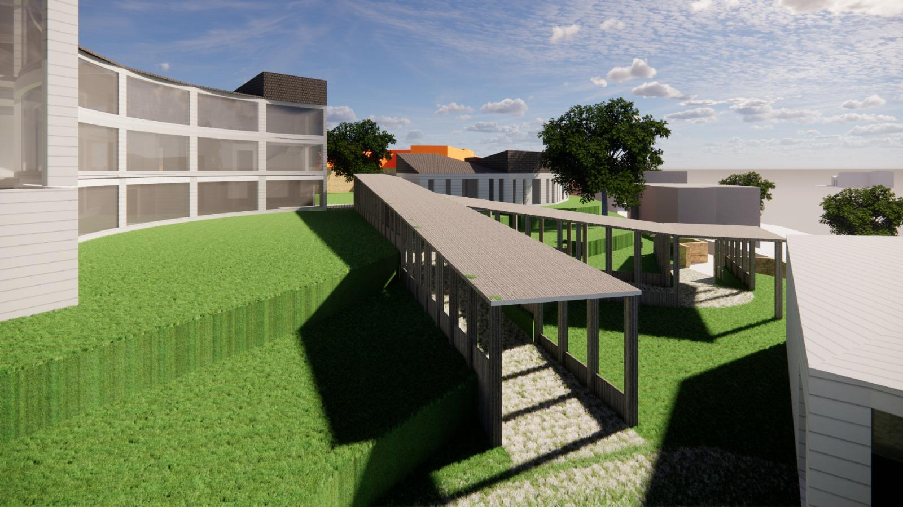

2024
Beylerbeyi, Istanbul
Educational / Public
2,500 m²
School Project
The Beylerbeyi Blind School project represents a sensitive approach to designing educational spaces for visually impaired students. Located in the historic Beylerbeyi district of Istanbul, this project explores how architecture can respond to the unique sensory experiences of its users.
The design emphasizes tactile materials, acoustic considerations, and spatial organization that prioritizes orientation and wayfinding through non-visual means. Every architectural element serves as a learning tool, creating an environment that is both functional and enriching.
Natural light, texture variation, and spatial rhythm become the primary design languages, replacing traditional visual hierarchies with multi-sensory architectural experiences.

The building carefully integrates with the sloping topography of Beylerbeyi, creating a series of terraced outdoor learning spaces. The design respects the historical context while introducing contemporary educational facilities.

Interior circulation spaces feature varying textures and materials that provide clear spatial orientation. Wall surfaces incorporate braille information panels and tactile guides, transforming corridors into interactive learning environments.


Classrooms are designed with acoustic optimization and flexible furniture arrangements. Natural ventilation and carefully controlled daylighting create comfortable learning environments that respond to seasonal changes.

The heart of the school is a protected courtyard featuring aromatic plants and water features that provide sensory landmarks. This space serves as both a social gathering area and an outdoor classroom for experiential learning.

The school opens to the community during evening hours, hosting cultural events and workshops. This approach breaks down barriers and promotes inclusive education within the broader Beylerbeyi neighborhood.